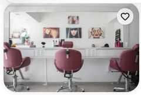

Round 2 rules and the missing probes, Wrong and Right
Every round-2 rule that had no mockup, plus the refs-page probes that lacked one (P17, the conflict cards, the richness and layout probes). Same format as the Taste Book you approved. Answer open items in one line, e.g. "R2-1 yes, P9 a, C1 keep, C4 keep, G1 b, G2 grid cities carousel home".
The round-2 rules, visualized
The first three are still yours to confirm; the rest are already law, shown so you can see what they mean.
R2-1
A switched-off button explains itself
A mute disabled button leaves you guessing what is missing.
Wrong, today
Tapping does nothing, no reason given.
Right, tap it
Pick a payment method first.
Still disabled, but the tap tells you why.
yes adoptno
R2-2
Red only after you leave a field
Mid-typing errors punish you for not being done yet.
Wrong
jo
Invalid email address.
Red while the cursor is still in the field.
Right
jo
jo
That email looks incomplete.
yes adoptno
P9
The pay button carries the exact amount
The price stops being repeated twice on the screen.
Wrong
TotalCHF 55
Right
Haircut, 45 minCHF 55
a yes, amount in the buttonb keep a plain verb
rule
Chart bars always start at zero
Same numbers both sides: 62 and 68. The cut axis turns a 10 percent gap into a 4x lie; studies show the exaggeration sticks even with a footnote.
Wrong, axis starts at 60
6268
axis begins at 60, sample values
Right, axis starts at 0
6268
axis begins at 0, sample values
rule
Digits that align wherever numbers stack
Your tabular-digits rule extended from codes to money and times.
Wrong, proportional
MonCHF 1'118
TueCHF 741
WedCHF 1'014
Ones and sevens are narrow, columns wobble.
Right, tabular
MonCHF 1'118
TueCHF 741
WedCHF 1'014
Every digit the same width, place values stack.
rule
Greys picked by job, never invented
Any new grey must take one of these five jobs; a sixth shade is a bug.
Wrong, invented shades
random 1
random 2
random 3
random 4
Right, the job map
page
sunken bg
border
disabled
meta text
rule
Icons almost always get a word
Research: outside a tiny set, icons alone get misread.
Wrong, mystery icons
Right, icon plus word
DirectionsServicesAny staff
rule
The never-do list, one example
Guilt-wording (confirmshaming) is on the banned list with its industry name; the EU rule outlaws the class.
Wrong, never ship this
Cancel your booking?
Keep my appointmentNo thanks, I enjoy wasting my slot
Right, symmetric and honest
Cancel your booking?
Keep appointmentCancel booking
The refs probes that had no mockup yet
P17
Long jobs minimize to a pill
Shape probe only, no long-running job exists yet.
Exporting bookings
Collect bookings
2Build the file
3Send download link
Minimize
1 job running, tap to open
a adopt for future long jobsno
C1
Category chips: your lock vs the refs
Your lock: neutral chips. Three of your refs color-code by category.
Your lock, neutral
CoiffeurNailsSpa
The refs, pastel per category
CoiffeurNailsSpa
keep the lockreopen per-category color
C2
The commit button: ink vs colored
Your lock: the one commit button stays ink. Two refs commit in color.
Your lock, ink
The refs, blue
Book now
keep the lockreopen
C4
Celebration screens: calm vs full color
Your 80/17 budget vs ref 05's saturated hero. If reopened, it would be scoped to one-off moments only.
Your law, calm
Booking confirmed
Sat 18 July, 14:30
The ref, full-bleed color
Confirmed
Sat 18 July, 14:30
keep restraintscope one exception
C3 + C5
The two that stay questions
C3 (selected states): your gray-fill lock is the only variant I can render, dark-fill selected markup is blocked by your own gate; the three ref treatments stay as images on the refs page. Answer keep or probe. C5 (staging vs product color): answer staging, product, or both.
G1 and G2, back as honest variants
These died with the rejected pages. Rebuilt here as side-by-side variants (the converged card recipe, your real photos), not as fake pages.
G1
How rich should a section be?
"Rich not bland" finally gets a dial: a, b or c.
a, sparse

Muse Beauty Studio
from CHF 80
b, current law
Muse Beauty Studio★ 4.8
Coiffeur, Basel
from CHF 80
c, rich
Muse Beauty Studio★ 4.8
Coiffeur, Aeschenvorstadt 55, Basel
12 services from CHF 35
from CHF 80
Converged card recipe (photo 5/4, star with value, no time row); rating and counts are sample values, photo real.
G2
List, grid or carousel, for which content?
Tap through; answer per surface, e.g. "grid for city pages, carousel for home rows".